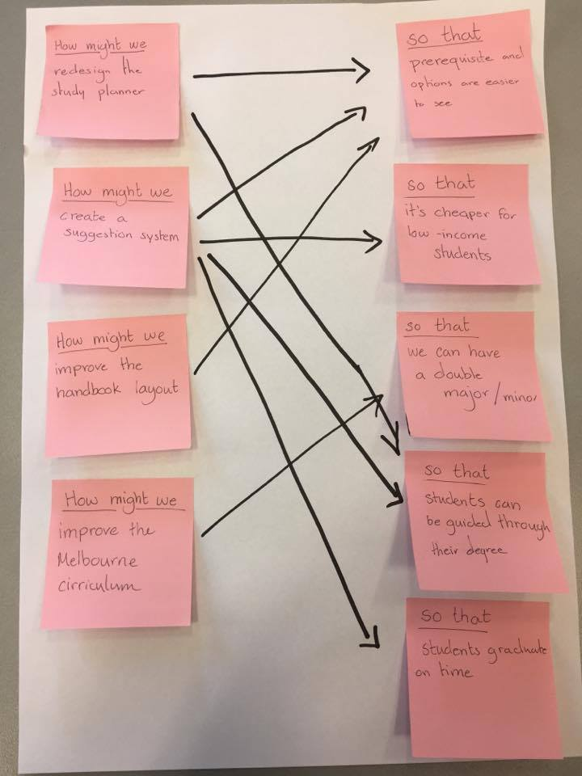
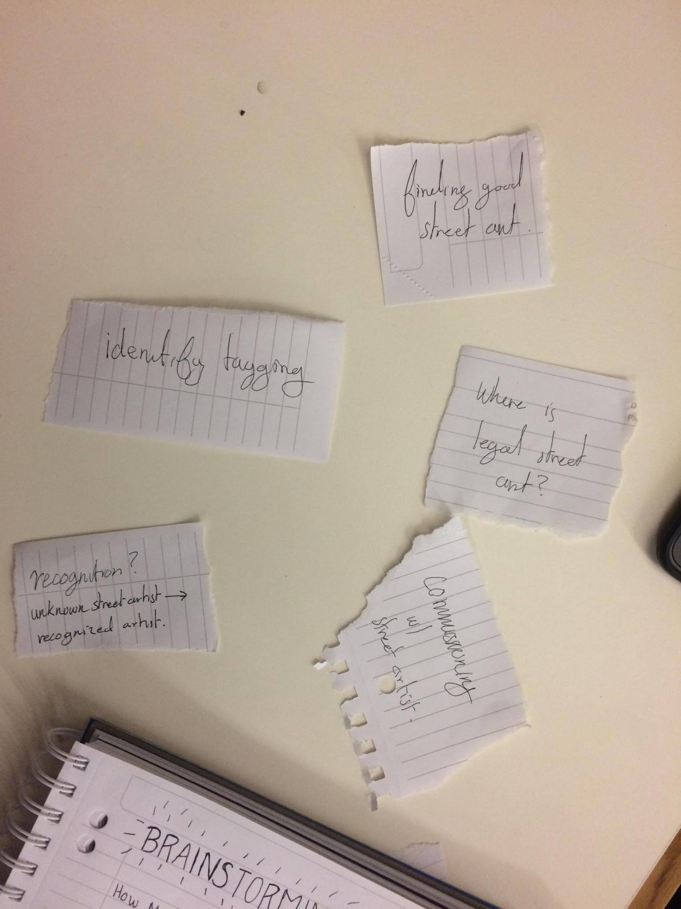

Solution Discovery
Last week we came up with a problem statement asking whether we can enhance the Street Art culture of Melbourne, or reduce the negative effects of so called “tagging”. This week our task was to come up with a preliminary solution by brainstorming and exploring different approaches.
In the workshop we were introduced to a brainstorming technique using “How might we…. So that…” as a template to narrow down and find a more specific area to focus on as well as to reduce ambiguity. We found it a useful way to approach problems and decided to keep it in mind for when brainstorming our own problem and finding a solution.

When considering our own case, we started off by listing the different problems that surround street art and graffiti. These were:
- Finding good street art
- Identify/report tagging
- Where is street art legal?
- Artist recognition and growth
- Street art community
We used these five topics to explore different aspects of street art in Melbourne and to decide what we want to focus on. However, we quickly voted to rule out ‘identify/report tagging’ since it is already covered by the government and a reporting system is already implemented.
Using the rest of the topics we identified possible target groups such as street artists, businesses, young inexperienced artists and tourists. We realized that there is a whole community surrounding street art and started to think about how the different parties can be connected and what their current relationships are. The discussion helped us come up with some ‘How might we…so that…’ statements inspired by the facts and information from our last ideation process as well as the identified target groups. A theme that reoccurred was legal street art and how it can be promoted as well as the benefits of promoting it. Consequently, it led us to the question:
How might we develop a platform that highlights the opportunities for street artists so that legal street art is encouraged?

The opportunities in this case refer to for example paid work for commissioners but also legal walls and places where artists at any level can express themselves. We chose to narrow down on this topic because even if the main benefit is the reduction of illegal street art and tagging by encouraging legal street art, it comes with other benefits such as recognition and experience for artists at any level and age, as well as help for businesses looking to contact artists and possibly increased tourism.
Additionally, the creation of legal spaces for street art can contribute to a feeling of safety and improved environment which directly benefits Melbourne city. An example of this is the Graham Street underpass which was previously a subject to graffiti vandalism and made locals feel unsafe when passing by. The Port Phillip Council therefore planned and funded a street art project where artists were hired to paint murals on the walls and pillars to create a friendlier environment.1 This is just one of many cases were legalizing street art has a direct positive outcome
This is more or less the stage our project is at currently. We have not yet defined what type of platform to create in order to highlight these opportunities, however we agreed that a platform hosting social interactions is in the right direction.